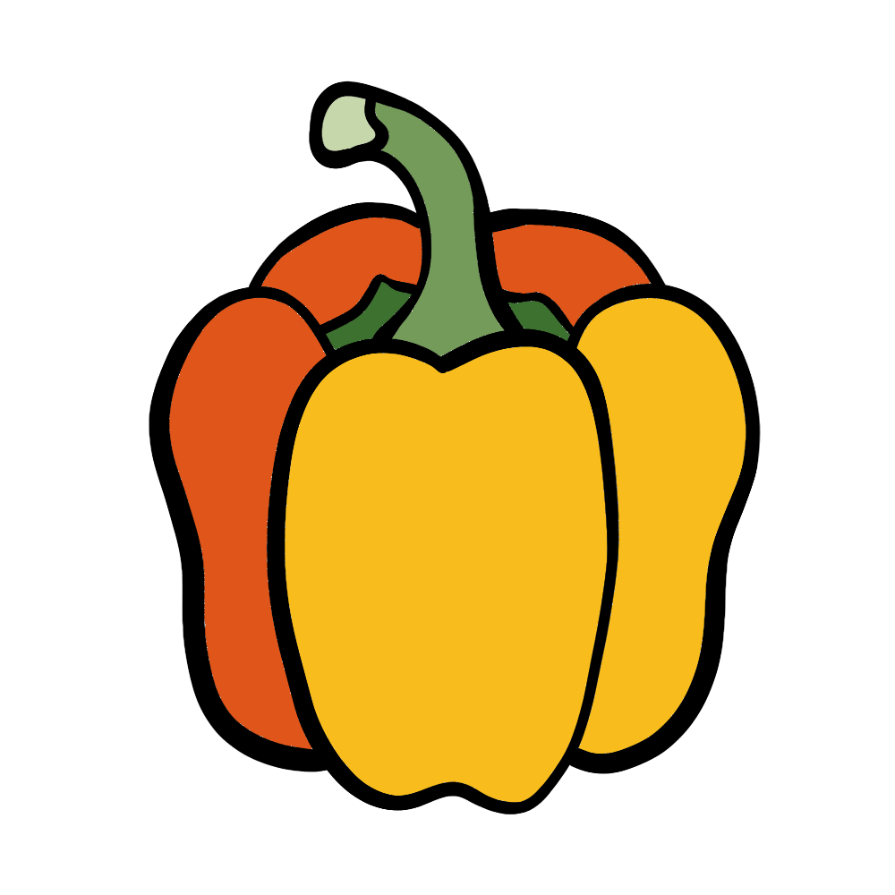

How to grow Capsicum
A Step by step Guide
Capsicum, also known as bell pepper, is a colorful and versatile vegetable that thrives in warm conditions. Whether grown in a garden bed or a container, capsicum is a rewarding plant that produces an abundant harvest. Follow this guide to grow healthy and flavorful capsicum at home.
Difficulty Rating: Easy to Moderate
Best Season to Grow: Spring and Summer
Can Be Grown: Both Indoors and Outdoors
Supplies Needed to Grow Capsicum
Capsicum seeds or seedlings
Well-draining, nutrient-rich soil
Compost or balanced fertilizer (10-10-10)
Garden trowel
Watering can or hose
Mulch (straw or wood chips)
Stakes or cages (for support)
Raised garden bed or deep containers (for small spaces)
Setting Up Your Capsicum Garden
Choosing the Right Location
Sunlight: Capsicum thrives in full sun, requiring at least 6-8 hours of sunlight per day.
Soil: Use well-draining soil rich in organic matter, with a pH between 6.0 and 7.0.
Spacing: Plant capsicum 12-18 inches apart, with rows spaced 24-36 inches apart.
Indoor Setup: If growing indoors, use deep containers (at least 12 inches deep) and place them in a sunny location or under grow lights.
Preparing the Soil
Loosen the soil to a depth of at least 12 inches to encourage strong root development.
Mix compost into the soil to provide essential nutrients.
Avoid heavy, compacted soils that can hinder root expansion.
Planting Capsicum
From Seeds: Start seeds indoors 6-8 weeks before the last frost. Sow them ¼ inch deep in seed trays and transplant outdoors when seedlings are at least 6 inches tall.
From Seedlings: Transplant seedlings directly into the garden or containers after the last frost when temperatures are consistently warm.
Support: Use stakes or cages to support plants as they grow to prevent stems from breaking under the weight of the peppers.
Caring for Your Capsicum Plants

Watering
Keep the soil evenly moist but not soggy, providing 1-2 inches of water per week.
Water at the base of the plant to prevent fungal diseases.

Fertilizing
Apply a balanced fertilizer every 3-4 weeks during the growing season.
Reduce nitrogen-heavy fertilizers once flowering begins to encourage fruit production.

Mulching & Weed Control
Apply mulch around plants to retain moisture and suppress weeds.
Regularly remove weeds to prevent competition for nutrients.

Pest and Disease Prevention
Watch for pests such as aphids, whiteflies, and caterpillars.
Use insecticidal soap or neem oil to deter pests.
Rotate crops yearly to prevent soil-borne diseases like bacterial spot and root rot.

Harvesting
Capsicum is ready to harvest in 60-90 days, depending on the variety.
Pick peppers when they are firm and reach the desired color (green, red, yellow, or orange).
Regular harvesting encourages continuous production.
By following these steps, you can successfully grow capsicum and enjoy fresh, homegrown peppers in your meals. Happy gardening! üå∂Ô∏è